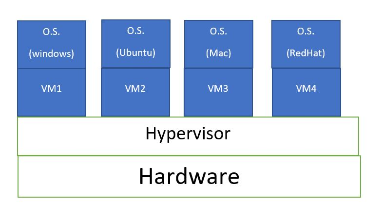
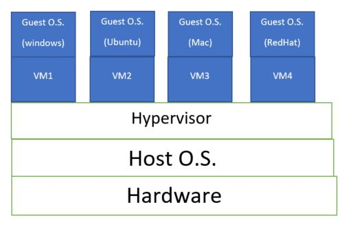

Hypervisor is a piece of software or firmware that creates and run Virtual Machines. A Hypervisor is sometimes also called a Virtual Machine Manager (VMM).Types of Hypervisor -
1. Type - 1 Hypervisor (Bare Metal or Native Hypervisor). 2. Type - 2 Hypervisor (Hosted Hypervisor).Type - 1 Hypervisor
Also called Bare Metal Hypervisor. Type - 1 Hypervisor runs directly on the system hardware (It is fireware). A guest O.S. runs on another level above the Hypervisor. -> VMware ESXi is a Type -1 Hypervisor that runs on the host server hardware without an underlying O.S. -> Type - 1 Hypervisor act as their own operating system. ESXi provides a virtualization layer that abstracts the CPU, storage, memory and networking resources of the physical host into multiple Virtual Machine. It is generally used at enterprise level. Type - 2 Hypervisor(Hosted Type)
Hypervisor that runs within a Conventional O.S. environment, and the host O.S. provides. -> Example of Type - 2 Hypervisor are VMware workstation, Oracle VirtualBox and Microsoft Virtual PC. -> It doesn't not have direct access to the host hardware & resources. It is used for testing or learning. 
| Criteria | Type - 1 Hypervisor | Type - 2 Hypervisor |
|---|---|---|
| aka | Bare Metal and Native | Hosted |
| Virtualization | Hardware Virtualization | O.S. Virtualization |
| Operation | Guest O.S. and application run on the hypervisor. | Run as an application on the hosted O.S. |
| Scalability | Better Scalability. | Not so much because of its Resilience on the underlying O.S. |
| System Independence | Has direct access to hardware along with Virtual Machine it host. | They are not allowed to directly access the host hardware and its resources. |
| Performance | Higher Performance as there is no middle layer. | Comparatively has reduce performance rate as it runs with extra overhead. |
| Security | More Secure | Less secure, as any problem in the base O.S. affect the entire system. |
| Example | VMware ESXi, hyper-V, Xenserver | VMware, Oracle VirtualBox |